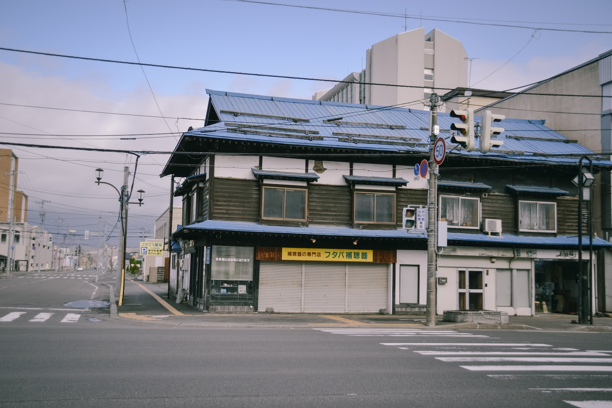
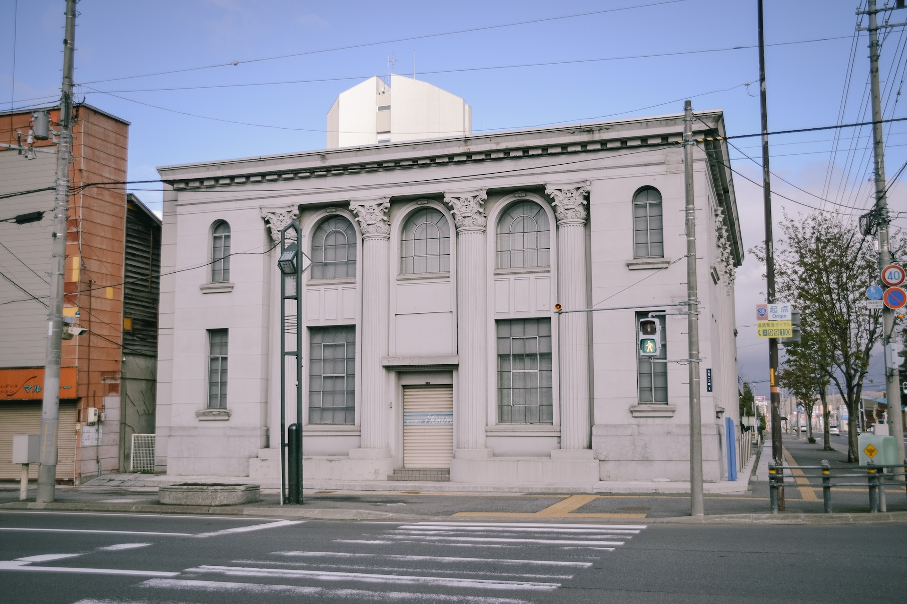
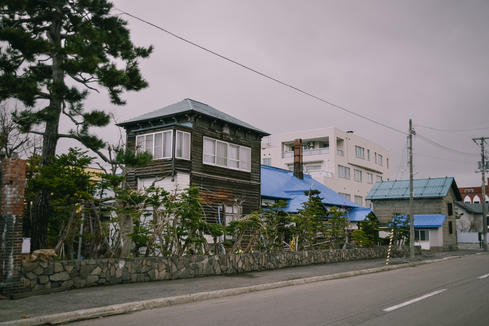
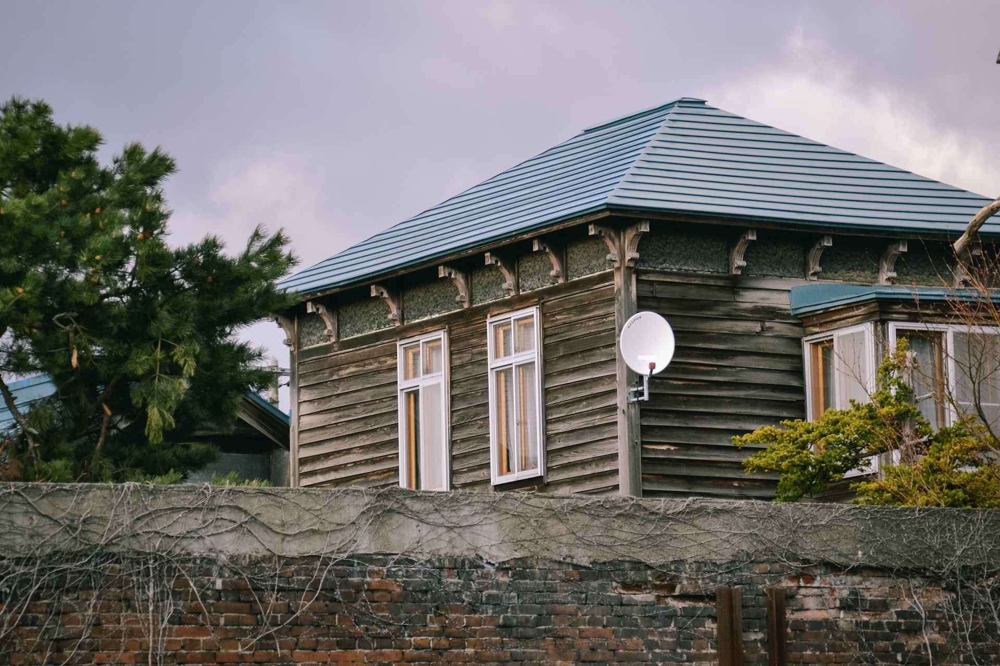
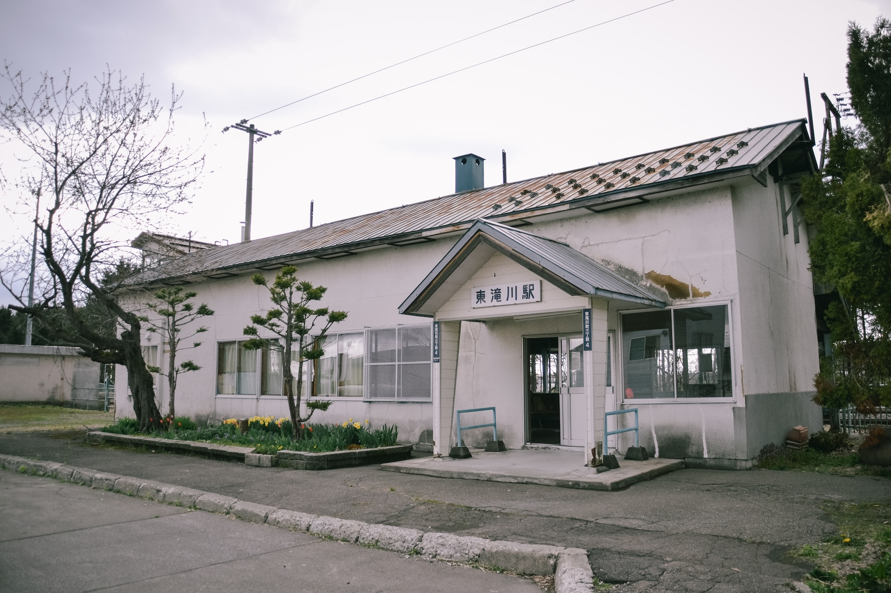
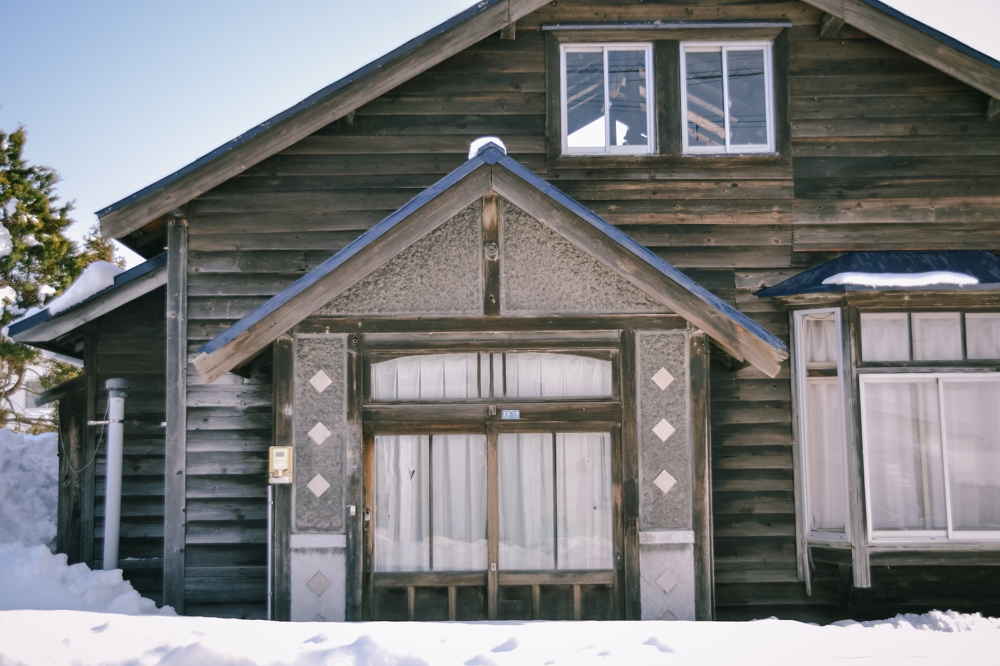
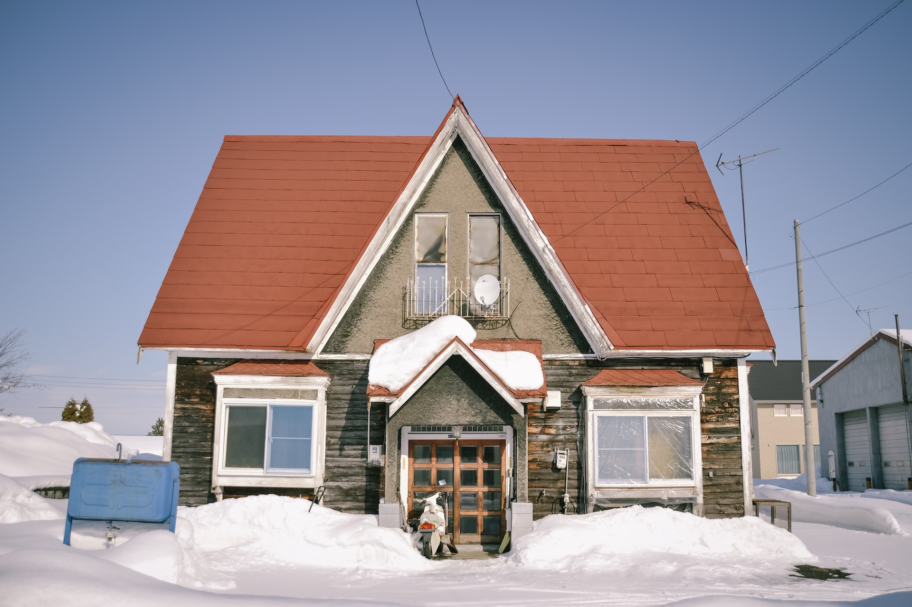
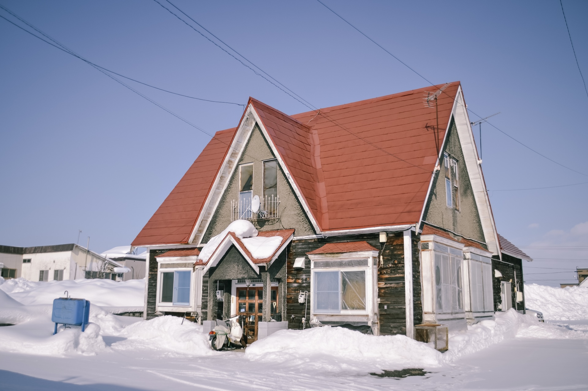

探訪:2022.5
平野部に築かれた街並みで、札幌-旭川間の往来に加え赤平・芦別方面への往来など古くから交通の要所として栄えた。滝川駅は函館本線と根室本線の分岐駅である。
駅周辺に北洋銀行滝川支店（旧北海道拓殖銀行滝川支店）の洋館をはじめとして数棟の近代建築が残るほか、市街地はずれの滝川東公園に滝川市郷土資料館分館 華月館（旧旅館三浦屋）の建物が保存されている。
滝川駅周辺の風景




探訪:2022.5
駅前の東滝川停車場線に面して旧郵便局の瀟洒な洋館が建っていたが、解体されていた。

探訪:2023.1
江部乙は滝川市街北部に位置する街並みで、農業を主要産業としている。街並みには西洋風の近代建築などが僅かに残る


